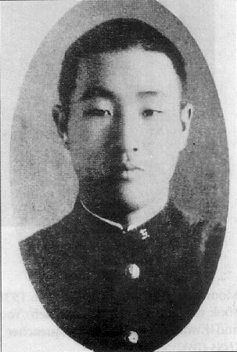
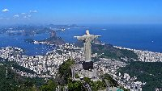

1920
1920 6 jan. Sun Myung Moon (Moon Sun Myung, på koreanska) Han föds i Chongju Buk Do, en provins utanför Pyong Yang Korea.Vilket är detta barns öde...
Hans namn är mycket symboliskt:
Sol (Gud), Måne (Kristus som reflekterar ljuset) och Ljus (Sanningens
ljus för kristna).

He talks about his birth in Jeongju, Pyeongan Province, Korea
____________________________________________________
1920 W.B. Yeats:
Irländsk poet och dramaförfattare.
Efter att freden mellan västmakterna och Tyskland undertecknats i Versaillesfördraget den 28 juni 1919,
så publicerade W.B. Yeats ett verk med titeln "Återkomsten" (Second Coming)
Han fick Nobelpriset i Litteratur 1923.
Efter katastrofen av första världskriget började några tänkare och visionärer igen ta upp tanken på ett politiskt
förenat Europa. 1923 grundade den österrikiska greven Richard von Coudenhove-Kalergi Pan-Europa-rörelsen och
var värd för den första pan-europa-kongressen, som hålls i Wien 1926.
Syftet var att särskilt att skapa ett kristet och implicit romersk katolsk, Europa.
I motsats till detta upptog Trotskij 1923 slogan "För ett Sovjetiskt USA i Europa" för ett icke-kristet,
kommunistiskt Europa.
1922-1931

Byggandet påbörjas av världen största Art Deco-staty "Christ the Redeemer" (Kristus Frälsaren)
i Rio de Janeiro Brasilien.
{kind=link}
1925
Världskyrkomötet i Stockholm initierat av Nathan Södermalm och föregångaren till World Council of Churhes.
1929
Citat om Korea, av den store indiske poeten och Nobelpristagaren Rabindranath
Tagore:
"I Asiens gyllene tidsålder
så var Korea en av dess ljus-bärare
och det ljuset väntar
att åter bli tänt
för upplysningen av Östern."